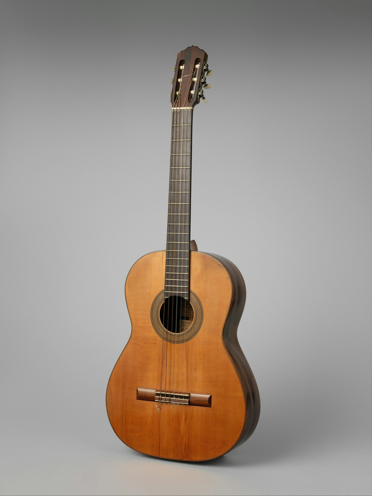
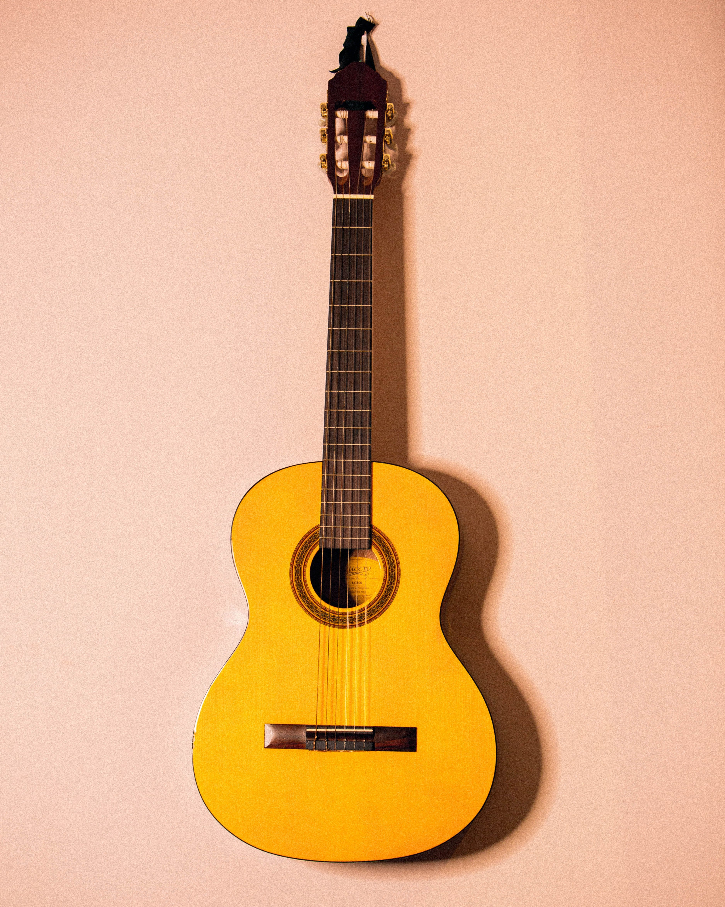

Discover the classical guitar collection at Suki's Guitar Shop, featuring instruments designed for beautiful tones, comfort, and precision. Known for their soft nylon strings and warm, gentle sound, classical guitars are perfect for traditional music, fingerstyle playing, and relaxing melodies. Whether you're a beginner learning your first notes or an experienced musician exploring classical techniques, we have the ideal guitar to support your musical journey.
Classical guitars have a rich musical history and continue to inspire musicians around the world. Their unique nylon strings create a smooth and expressive sound, making them suitable for everything from traditional compositions to modern acoustic arrangements. At Suki's Guitar Shop, we offer a selection of classical guitars that combine traditional craftsmanship with comfortable playability, helping every musician express their creativity through music.

The Dreadnought is known for its large body and powerful, full-bodied sound. Its strong bass and loud projection make it perfect for chord strumming, country music, folk, and acoustic performances.
Designed with a cutaway body for easier access to higher frets, this guitar is ideal for fingerstyle playing and complex melodies. Its comfortable design and balanced tone make it a versatile choice for many musicians.

The Resonator Guitar features a unique metal resonator that produces a bright, metallic, and powerful sound. Popular in blues, country, and bluegrass music, it is perfect for musicians looking for a distinctive and traditional tone.